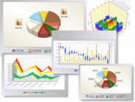

Investigación en el
CEAL
|
|
Varias líneas de I+D+I
se desarrollan en el CEAL. Todas ellas están relacionadas
con la
optimización industrial, la logística y la
administración de la cadena
de abastecimientos (supply chain management), y la inteligencia de
negocios para dominios logísticos. Varios proyectos
en cada línea se están desarrollando
actualmente, algunos de los cuales pueden asociarse a
más de una línea.
|
Sistemas
Inteligentes para
Logística y Producción (Industrial y Agroalimenticia)
|
|
Esta
línea de investigación está enfocada
en el desarrollo de tecnologías
basadas en la Inteligencia Artificial y la Investigación
Operativa,
para resolver problemas de optimización
industrial
tales como Planificación y Scheduling de la
Producción (Production
Planning & Scheduling), Planificación de Procesos de
Manufactura
Asistida por Computadora (CAPP, Computer-Aided Process Planning), y
Optimización Colaborativa.
|
|
Administración de
la Cadena de Abastecimientos (SCM) y Logística
|
Esta línea de
investigación está enfocada en el desarrollo
de modelos
y metodologías
para el diseño, composición y
optimización de
supply chains. Esta línea incluye temas de medición de performance en diferentes industrias,
colaboración dentro de las supply chains,
logística inversa y lean supply chains, entre otras.
|

|
|
Business Intelligence para
Logística
|

|
El objetivo principal de
esta línea es aplicar tecnologías de Business Intelligence
(Inteligencia de Negocios) tales como Data Warehousing o Data Mining,
para soportar los procesos de toma de decisiones en los dominios de la
Logística y la Administración de la Supply Chain
(SCM).
|
|